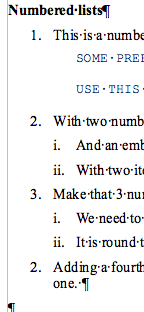

Sun ODF converter for MS Word - version 1 review
2007-07-05
Via Simon Phipps comes the news that Sun has released its OpenDocument Format plugin for Word. I tested this a while ago and found it wanting. It was too slow and it mangled documents. This time it seems to be a bit better.
I’m starting this post in Word 2003, and I’m going to bounce it backwards and forwards with NeoOffice on the Mac a few times to see if I can actually use this converter, as opposed to the depressing experiences with ODF to Word conversion I reported in February.
I’m having similar issues to last time. Most things seem to round-trip with some glitches with lists, but in Word we have a ‘repair lists’ macro that uses the style names. But this time it is faster. Still slow but faster. And it has not so far completely mangled my document and lost the headers and footers.
The Plug in is easy to setup and use, the conversion happens transparently and the additional memory footprint is minimal. Microsoft Office users now can have seamless two-way conversion of Microsoft Office documents to and from Open Document. The ODF Plug in runs on Microsoft Windows and is available in English. More language support will be available in later releases.
I would not call it transparent or seamless, as the screen flashes and you can see that the plugin is saving stuff into a temp file, and it's a significant delay over the native save process. Sometimes your document disappears and then comes back, too.
The verdict
You can read on below for more detail but the verdict is that this is now ready for us to test in more detail – to see if we can use it in real life in ICE.
It is still very slow though. I tried in on a real paper of about 5000 words with a dozen or so graphics and you're looking at 30 or 40 seconds to open it on my modest computer at home.
ICE supports the .doc format but it causes problems, as we can't really get the ICE server to fix people's documents when they are in .doc format. While this plugin is actually using the same code to convert from word to ODF as the OpenOffice.org does, it is still a step forward.
Simon mentions the support services, no sign of how you feed back bugs, though.
So we're going to look into this. I will get some tests done to see how it interacts with EndNote and Zotero bibliographies.
More detail
ICE lists in Writer work by defining both a paragaraph style and a list style for each different list / level combination to work around the complex and unusable list model in Writer and allow interop with Word. In the round tripping the paragraph style names are preserved, but list style names get replaced with names like WW8Num25, which means that existing lists work, but if you want to add to a list you have to put the correct list styles back on them. We can automate this in ICE, so it's no big deal for our users.
But there's one gotcha that I ran across. I reapplied the list syle
li2n to the items in the list below but the numbering was still wrong
when I added a new item.

See how the last item is numbered 2? It took a while, but finally I
realised that the first three items where in list style li2n but
level 2. You have to look at this tiny status-bar thing down the
bottom:

What's happening is that the converter is not only assigning things to new list styles it's messing around with the level. I can't see any good reason for this, but then I can't see the reason for the design of the whole list system. I think it's just an unfortunate legacy of the old StarOffice from years ago.
So I was able to fix the lists by promoting all the items to level 1. Again, we can deal with this automatically. This may be the solution is was looking for a couple of days ago when I had trouble with list formatting in Writer.
Another problem is that unused styles go missing, so in Word you have to keep re-attaching the ICE template to the document (which I’m sure we could automate) and in ICE you may have to reload styles into the document if you want to use one that is not already in the document, but again we can probably work around this, it may be a matter of improving our extension technology, or making ICE able to create styles it doesn't have automatically.
The messy picture below seems to be round-tripping about 85%. The main issue is that when I inserted it from Insert / Picture / New Drawing ICE can’t render it properly so I converted it into a Windows Meta File, which messed it up. That’s one for the ICE team to fix if possible.

Tests
Definition lists : These don’t use any list functions, and they work fine.
Bullet lists : This is a definition list with: - A bullet list in it
- With two bullets
How about a Blockquote in here:
> “This is quoted text. class="spCh spChx201d">”
- And a third bullet
Numbered lists
: 1. This is a numbered list
SOME PREFORMATTED TEXT EMBEDDED IN THE LIST.
USE THIS FOR PROGRAM CODE
2. With two numbers
1. And an embedded Roman-numbered list
2. With two items in it
3. Make that 3 numbers
1. We need to check that this list restarts correctly when
2. It is round tripped
4. Adding a fourth list item in NeoOffice – having trouble with the numbering on this one.